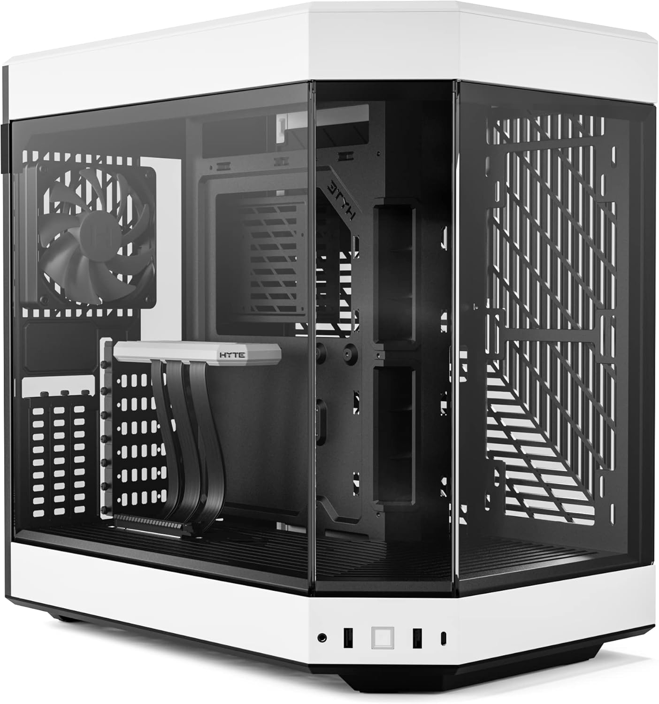
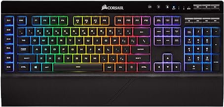
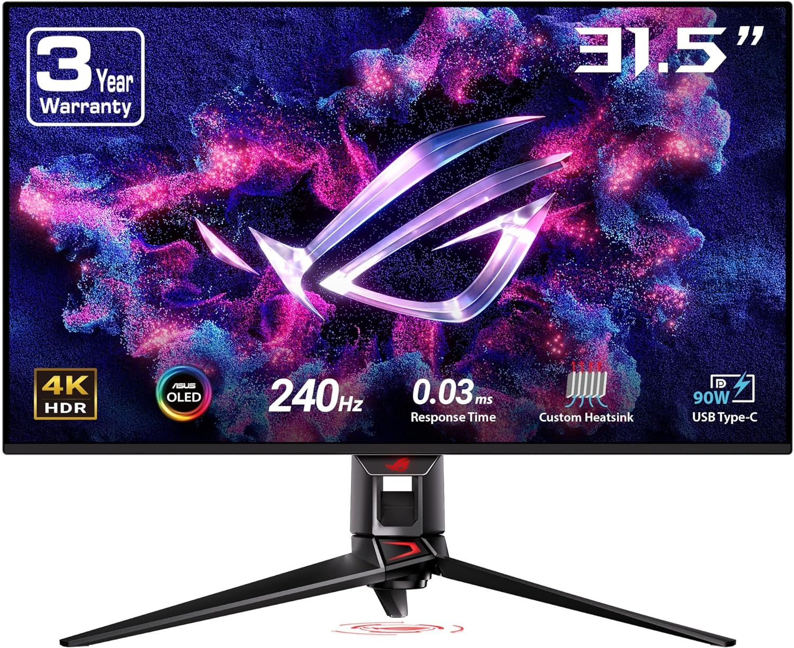

Bienvenido a Alien BOX
Encuentra los mejores productos de tecnología a los mejores precios,(Profe apruebenos porfa)
Nuestros Productos Destacados

HYTE Y60 - Carcasa para juegos de computadora
Carcasa para juegos de computadora ATX de cristal templado panorámico de doble cámara con cable vertical PCIE 4.0 incluido, color blanco (CS-HYTE-Y60-BW)
Comprar

CORSAIR Teclado inalámbrico
Teclado inalámbrico para juegos K57 RGB – Tiempo de respuesta <1 ms con Slipstream Wireless – Conecta con dongle USB, Bluetooth o cable – Teclas RGB retroiluminadas individualmente, negro
Comprar

ASUS ROG Swift Monitor para juegos
Monitor para juegos OLED 4K de 32 pulgadas (PG32UCDM) - UHD (3840 x 2160), QD-OLED, 240Hz, 0.03ms, compatible con G-SYNC, disipador de calor personalizado, película de grafeno, 99%
Comprar